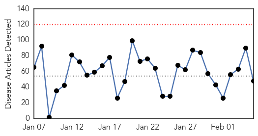
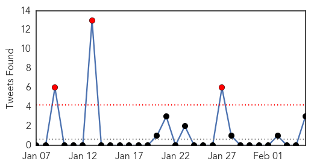
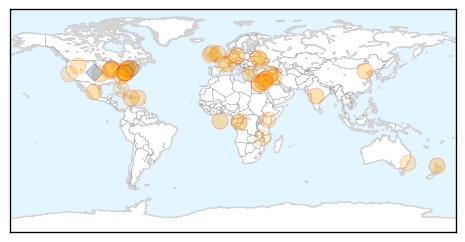
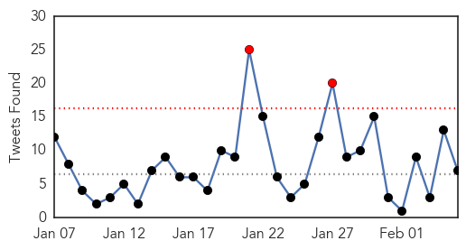
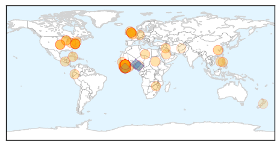

Unknown
30-Day Web Trend
0 alerts, 0 warnings

30-Day Twitter Trend
3 alerts, 0 warnings

Article Locations
Article Confidences

Top Articles:
- 0.953
- Diphtheria case in Auckland
- 0.945
- 9 More Flu Deaths Reported In North Carolina
- 0.927
- Pittsburgh VA hospital closes unit due to stomach flu virus
- 0.917
- Chicago Tribune
- 0.917
- Chicago Tribune
- 0.917
- Chicago Tribune
- 0.917
- Chicago Tribune
- 0.917
- Chicago Tribune
- 0.917
- Chicago Tribune
- 0.917
- Chicago Tribune
- 0.917
- Chicago Tribune
- 0.917
- Chicago Tribune
- 0.917
- Chicago Tribune
- 0.917
- Chicago Tribune
- 0.917
- Chicago Tribune
- 0.917
- Chicago Tribune
- 0.917
- Chicago Tribune
- 0.917
- Chicago Tribune
- 0.866
- U.S.-led forces target Islamic State with 12 air strikes in Iraq, Syria
- 0.866
- Ukraine won't consider any peace plan undermining territorial integrity-PM
- 0.866
- Putin will likely discuss energy cooperation during Egypt visit
- 0.866
- Russia says giving lethal arms to Ukraine would be security threat
- 0.866
- Bomb explodes under car in Belfast; no injuries
- 0.866
- Heavy shelling in Syrian capital -witness, media
- 0.856
- Health : Cancer an urgent problem of public health...
- 0.809
- New case of norovirus reported at Opryland Hotel
- 0.782
- Spokane, North Idaho News & Weather KHQ.com
- 0.764
- Puerto Rico declares flu epidemic; 1 dead, 140 hospitalised
- 0.749
- Four child malnutrition deaths in northern Argentina; another 1.800 in danger — MercoPress
- 0.702
- University Hospital Limerick tops trolley list again
- 0.692
- 'Superbug' infects eight patients at Phila. hospital
- 0.691
- NCSU students sickened from potential norovirus outbreak
- 0.666
- Virologist hunts cryptic virus that may be responsible for a society-shattering disease in Central Africa
- 0.664
- This vitamin might protect kids from malaria
- 0.663
- Video: Jordanian pilot's hometown mourns his death
- 0.640
- Hunting the Source of a Secretive Sickness
- 0.601
- Hollande and Merkel head to Kiev, Moscow with peace plan
- 0.586
- French knife attack suspect says he ‘hates military, Jews’
- 0.581
- The Winter itch is What's Going Around
- 0.581
- Greek, German finance chiefs fail to reach deal on debt
- 0.575
- UN agency boosts aid for Malawi's flood victims, as Member States are briefed on situation
- 0.569
- Syria launches air strikes after 'Islam Army' targets Damascus
- 0.564
- Al-Jazeera journalist returns to Australia after jail in Egypt
- 0.564
- ‘Colonial wounds’ to blame for Paris attacks, artist says
- 0.555
- Burr, Hatch, Upton Unveil Obamacare Replacement Plan (US Senate Committee on Finance)
- 0.553
- MGH team identifies factors predicting infection risk in patients with serious burns
- 0.542
- ‘Dodo the Pimp’ takes centre stage at Strauss-Kahn trial
- 0.530
- Flu shots still available in Maryland, medical experts stress
Top Tweets:
- 0.620
- RT “@Reuters_Health: WHO still concerned about spread of Saudi MERS virus http://t.co/Eu43SG47l1”
- 0.616
- This is a bad flu season!
- 0.577
- Manchas de café por todo tu cuarto, ropa regada, mesa rota... Crónicas de una torpe en tu casa. @ReiserVerden
- 0.574
- .@WHO Emergency Committee says MERS isn't a global health emergency but situation & possibility of international spread is still a concern.
- 0.567
- Correr de manera extenuante se refiere a carrera rápida, jogging moderado es lo que yo hago. No habla de tu chocheteo, fíjate.
- 0.547
- No consigo saber quién eres a través de tu mejilla.
- 0.542
- RT: .@WHO Emergency Committee says MERS isn't a global health emergency but situation & possibility of international sprea…
- 0.520
- Si quieres mejor calidad de vida, deja de fumar, bebe mucha agua y haz ejercicio. No es discrimen, es ciencia.
Ebola
30-Day Web Trend
0 alerts, 0 warnings

30-Day Twitter Trend
2 alerts, 0 warnings

Article Locations
Article Confidences
Top Articles:
- 1.000
- Guinea, the ground zero of the Ebola outbreak, now hopes the end is near
- 1.000
- The World Looks Away as Ebola Surges
- 1.000
- The World Looks Away as Ebola Surges
- 1.000
- Traveler being monitored in Madison for Ebola virus
- 1.000
- Ebola outbreak: Doctors warn of 'post-Ebola syndrome' among survivors in West Africa
- 0.999
- MSF says lack of public health messages on Ebola "big mistake"
- 0.999
- Ebola outbreak: Doctors warn of 'post-Ebola syndrome' among survivors in West Africa
- 0.999
- Person in Madison area being monitored for possible Ebola symptoms
- 0.999
- Tests confirm traveler being monitored at local hospital does not have Ebola
- 0.999
- Did we celebrate too soon? Number of new Ebola cases in West Africa rises for first time in 2015
- 0.999
- Patient being monitored in Madison for Ebola
- 0.999
- Downward Ebola trend suddenly reverses itself
- 0.998
- UPDATE: Wisconsin traveler triggers Madison Ebola response, moni
- 0.998
- U.S. to leave Liberia as Ebola rates plummet
- 0.998
- Anti-Ebola Drug Shows Encouraging Results in Guinea
- 0.998
- GP who swapped Sheffield surgery for Sierra Leone tells of fight against Ebola
- 0.997
- Military Ebola mission in Liberia coming to an end
- 0.997
- Number of new Ebola cases rises for first time in 2015: WHO
- 0.995
- West Africa's Diaspora Reacts to Ebola
- 0.995
- Health Highlights
- 0.995
- Military Ebola mission in Liberia coming to an end
- 0.994
- WHO: Ebola Cases Rise For the First Time in 2015
- 0.993
- Secret burials thwarting efforts to stamp out Ebola
- 0.993
- Post-Ebola Syndrome: Survivors Report Memory Loss, Chest Pain, Mental Illness, Eye Problems
- 0.993
- Drug trials in Guinea yield ‘encouraging’ results
- 0.990
- Last mile in fight against Ebola will be the hardest
- 0.990
- Ebola Vaccines Trial Begins in Liberia
- 0.989
- Ebola funding held up by ‘inefficient’ WHO alert system
- 0.986
- U.N. body demands debt cancellation for Ebola-impacted countries : Frost Illustrated
- 0.984
- Cuban Medics Fighting Ebola Nominated for Nobel Peace Prize
- 0.978
- Ebola cases on rise for first time this year, says WHO
- 0.978
- Fewer Than Half of Ebola Pledges Have Reached Area in Need
- 0.975
- War of the generals over Mamasapano
- 0.975
- PH slams China over vessels and clams
- 0.975
- Furious Jordan vows ‘severe response’ to ISIS
- 0.975
- 3 Filipinos kidnapped in Libya
- 0.969
- Thanks to your donations, children in Guinea are back in school after Ebola
- 0.969
- Ebola cases on rise for first time this year, WHO says
- 0.967
- Sierra Leonean official warns traditional leader over Ebola resurgence
- 0.962
- Scots GP sets up charity to fund Ebola treatment
- 0.961
- Free from Ebola, survivors complain of new syndrome
- 0.954
- Emory after Ebola: Teachable moments
- 0.953
- Highland Ebola doctor Chris Mair says Sierra Leone health service in crisis
- 0.948
- Ebola crisis: IMF announces $US100 million debt relief for Guinea, Liberia and Sierra Leone
- 0.938
- IOM Sierra Leone tests Ebola airport screening
- 0.936
- Chaos as 'Ebola' corpse lands in Harare
- 0.935
- Sierra Leone: Secretary-General Appoints Bintou Keita of Guinea Ebola Crisis Manager for Sierra Leone
- 0.932
- IMF Announces $260 Million Aid Package and a New Catastrophe Relief Fund for Ebola-Stricken Countries
- 0.930
- PH donates P90M for Ebola response
- 0.921
- Statement by Commissioner Stylianides, EU Ebola Coordinator, on rising Ebola case numbers - Sierra Leone
Showing top 50 articles...
Top Tweets:
- 0.993
- RT: Mboté Baninga ! Pour la lutte contre Ebola en Afrique. Envoie "Stop Ebola" au 7979 à 100FCFA. AfricaAgainstEbola http:/…
- 0.993
- Ebola outbreak: Doctors warn of 'post-Ebola syndrome' among survivors in West ... - ABC Online http://t.co/29juEXCLX6 ebola EVD
- 0.962
- UPDATE 2-Ebola virus sent out of high-security lab was likely dead -CDC - Reuters http://t.co/F7PFJSieQ1 ebola EVD
- 0.943
- Secret burials thwarting efforts to stamp out Ebola: UN - Reuters http://t.co/GX21vBwSBC ebola EVD
- 0.916
- W. Africa Ebola Cases Rise After Weeks of Decline - Voice of America http://t.co/vDYcudmJJR ebola EVD
- 0.905
- Ebola in graphics - The Economist (blog) http://t.co/niShkMvP5N ebola EVD
- 0.901
- RT: L'avenir de l'Afrique dépend de vous ! Faites un don en envoyant "STOP EBOLA" au 1919 ! AfricaAgainstEbola kebetu http://t.co…
- 0.897
- WHO: First Rise in W. Africa Ebola Cases After Weeks of Sharp Decline - Voice of America http://t.co/ZsDZn9BJC3 ebola EVD
- 0.865
- Downward Ebola trend suddenly reverses itself - USA TODAY http://t.co/PaSEw4T0td ebola EVD
- 0.861
- Ebola Drug Aids Some in a Study in West Africa - New York Times http://t.co/WLr8157iaV ebola EVD
- 0.839
- Le nombre de cas d'Ebola en hausse pour la première fois en 2015 http://t.co/mgYKKDI80Q via
- 0.793
- Sobe o número de casos de ebola na África, aponta OMS http://t.co/uH5T3Fy2Pb
- 0.742
- Ebola survivors talk stigma, lessons learned, and the future of ebola in West Africa on WHYS
- 0.672
- RT: Cases of Ebola virus infection can be exported any old time Thoughts at VirolDU.. http://t.co/wAM43Ig26M http://t.co/X3fux9…
- 0.666
- IMF grants Ebola-hit countries $100m debt relief - The Guardian http://t.co/O1CGKJqaYm ebola EVD
- 0.666
- IMF grants Ebola-hit countries $100m debt relief - The Guardian http://t.co/IE0LN4on3Y ebola EVD
- 0.643
- MSF says lack of public health messages on Ebola "big mistake" http://t.co/CDM03rXrsG via
- 0.640
- Photos. Stopping the Ebola epidemic http://t.co/cH2EtCltYL
- 0.577
- Sex crimes up amid Ebola outbreak in SierraLeone http://t.co/gtSiVztXcQ
- 0.518
- Meet Ebola volunteer Nikola and why he's going to West Africa to fight Ebola http://t.co/hNdKTGiz4a http://t.co/TabQHVBZYE